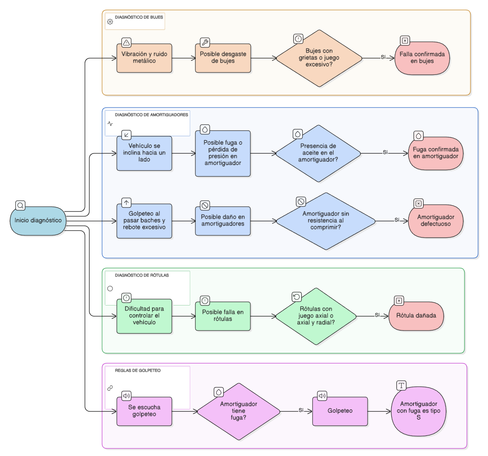

Diagrama de Árbol de Decisión
Visualización completa del flujo de diagnóstico

Estructura del motor de inferencia y base de conocimiento
Visualización completa del flujo de diagnóstico

Formato: Si [premisa] entonces [conclusión]
Si (Vibración/ruido metálico) Y (Bujes con grietas o juego excesivo)
Entonces Falla confirmada en bujes
Equivalencia lógica: p ∧ q → r (p Y q implica r)
Si (Golpeteo al pasar baches) Y (Rebote excesivo) Y (Sin resistencia al comprimir)
Entonces Amortiguador defectuoso
Equivalencia lógica: p ∧ q ∧ s → r (múltiples condiciones con Y)
Si (Vehículo se inclina hacia un lado) Y (Presencia de aceite O fuga visible)
Entonces Fuga confirmada en amortiguador
Equivalencia lógica: p ∧ (q ∨ r) → s (combinación de Y y O)
Si (Dificultad para controlar) Y (Juego axial O juego radial)
Entonces Rótula dañada
Equivalencia lógica: p ∧ (q ∨ r) → s (p es suficiente para s dado q o r)
Premisa Mayor: Si hay golpeteo → entonces P
Premisa Menor: Si el amortiguador tiene fuga → entonces S
Conclusión: Por lo tanto, si (Golpeteo Y Fuga) → el amortiguador es de tipo S
Forma silogística: (p → q) ∧ (x → s) ∧ (p ∧ x) → (tipo S)
Interpretación: Cualquier amortiguador que presente golpeteo Y fuga es clasificado como tipo S
Reglas 1, 2, 4, 5. Requiere que todas las condiciones sean verdaderas simultáneamente.
Reglas 3 y 4. Requiere que al menos una de las condiciones sea verdadera.
Forward Chaining (Encadenamiento hacia adelante)
Formas lógicas utilizadas en las reglas
p → q
"Si p entonces q"
Todas las reglas usan esta forma base
p solo si q
La condición p requiere q
Reglas de verificación física
q si p
Si ocurre p, entonces ocurre q
Todas las conclusiones diagnósticas
p es suficiente para q
p por sí solo garantiza q
Reglas de confirmación de fallas
Suspensión Mazda - Motor de Inferencia Lógica
Este sistema experto utiliza reglas lógicas con encadenamiento hacia adelante para diagnosticar problemas en el sistema de suspensión mediante preguntas estructuradas.
Recomendación:
Condiciones deducidas:
Reglas activadas por el motor de inferencia:
Recomendación:
Con los síntomas evaluados, no se ha confirmado una falla específica en el sistema de suspensión.
Recomendación General:
Seguir el flujo de diagnóstico completo si los síntomas persisten. Realizar inspección visual general de la suspensión.